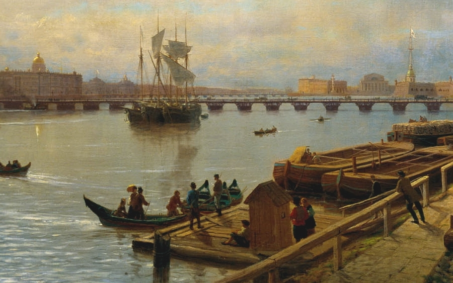
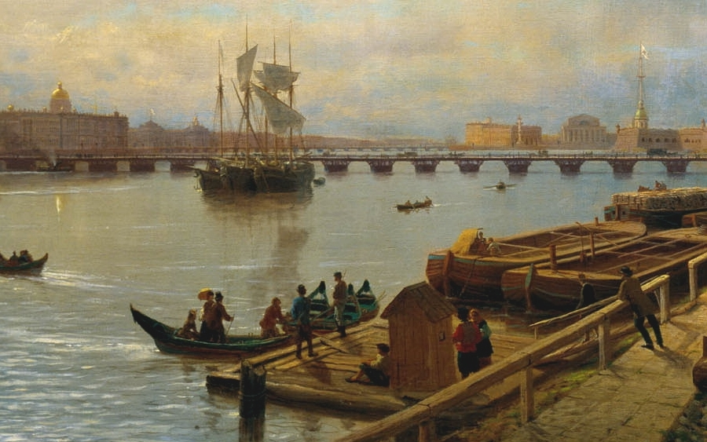

| Museum name | Output | Nearest metro station | Website** |
|---|---|---|---|
| State Hermitage Museum | Monday | Admiralteyskaya | Website of State Hermitage Museum |
| Catherine Palace | - | - | Website of Catherine Palace |
| State Russian Museum | Tuesday | Gostinyy dvor Nevskiy prospekt | Website of State Russian Museum |
| Peter and Paul Fortress | - | Gorkovskaya | Website of Peter and Paul Fortress |
| St. Isaac's Cathedral | - | Admiralteyskaya | Website of St. Isaac's Cathedral |
| Kazan Cathedral | - | Nevskiy prospekt | Website of Kazan Cathedral |
| Savior on the Spilled Blood | Wednesday | Nevskiy prospekt | Website of avior on the Spilled Blood |
| Faberge Museum | Friday | Gostinyy dvor Nevskiy prospekt | Website of Faberge Museum |
| Russian cruiser «Aurora» | Monday Tuesday | Gorkovskaya Ploschad Lenina | Website of Russian cruiser «Aurora» |
| Kunstkamera museum | Monday | Admiralteyskaya | Website of Kunstkamera museum |
* Most museums close the ticket office an hour earlier.
** Check the information on the official sites! There are closings due to holidays, cleaning days, etc.